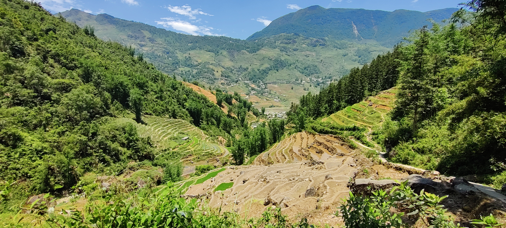

Rejs ud under uddannelse
Studerer du til multimediedesigner lige nu? Og vil du gerne kombinere uddannelse og dannelse i udlandet? Som multimedie designer kan du vælge at tage et semester, din praktik eller en to ugers sommerskole i udlandet.

Hvordan gør jeg?
- 1. Ansøge online via vores ansøgningssystem (kun to gange om året) med deadlines den 1. marts og 15. september. Find ansøgningsformularen i afsnittet 'Hvor og hvornår kan jeg tage hen'.
- 2. Efter din ansøgning vil du blive nomineret til en af dine prioriterede destinationer (ikke nødvendigvis din første prioritet), som du skal acceptere. Universitetet vil kontakte dig med deres ansøgningsdetaljer, hvilket kan tage op til 3 måneder fra vores ansøgningsdeadlines.
- 3. Du skal også ansøge direkte til det valgte universitet, og de vil guide dig gennem deres processer. Før det skal du få godkendt dine fag af din internationale koordinator og udarbejde en uddannelsesaftale. Kontaktoplysninger til internationale koordinatorer er angivet for hvert studieområde.
- 4. Du skal bestå en sprogtest og sende din endelige indskrivningsbekræftelse samt underskrevet uddannelsesaftale, før din Erasmus-støtte forberedes (kun hvis du tager til et EU-land). Hvis du ikke modtager Erasmus-støtte, skal denne information også sendes til International Office.
Læs meget mere på Study Update: https://studyupdate.eaaa.dk
Økonmien
Studier i udlandet åbner en verden af muligheder, men det kræver ofte finansiel støtte. Udlandsstipendier kan dække hele eller dele af studieafgiften, hvilket giver dig en chance for at studere uden bekymringer. Hvis stipendiet ikke dækker det hele, kan udlandsstudielån hjælpe med at fylde hullerne. Dit danske uddannelsessted vil afgøre, om dit studieophold er godkendt. Så intet kan holde dig tilbage fra at udforske verden og forfølge din uddannelsesdrøm!